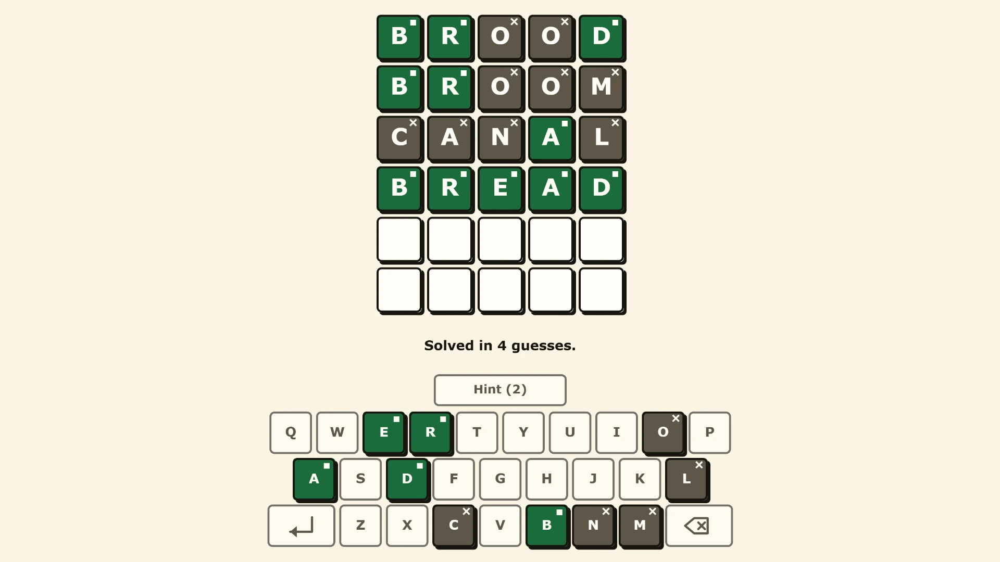
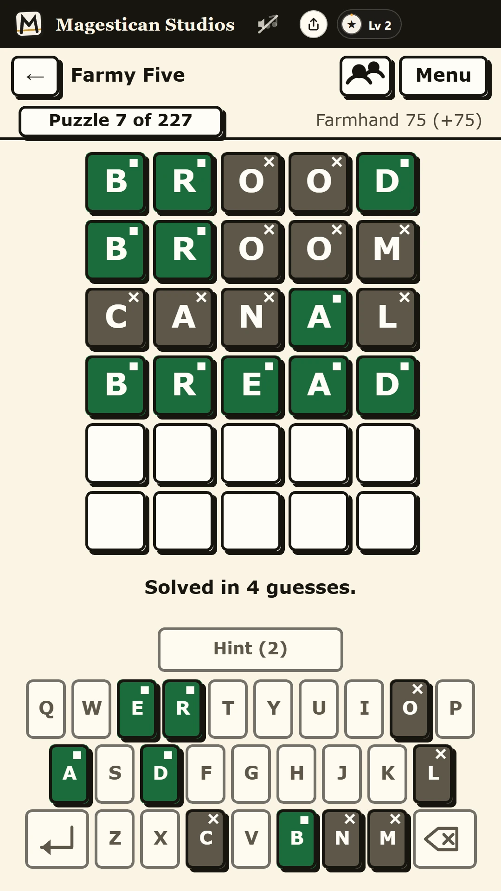
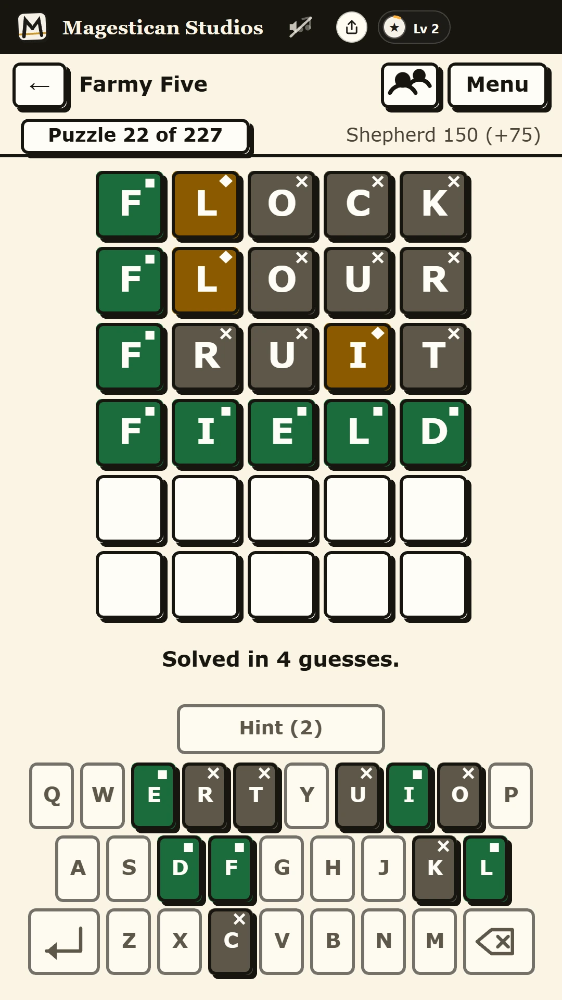

Guesswise — a free five-letter word guessing game
Six guesses at a five-letter word, in letters you can read across the room, with no clock anywhere near them.
Play Guesswise in your browser →



How it plays
One five-letter word, six goes at it. After each guess every letter tells you where it stands: green for the right letter in the right place, gold for a letter that is in the word somewhere else, grey for one that is not in the word at all. The keyboard keeps the same score, and a letter that has once been green never goes back to gold.
The scoring handles repeated letters properly, which is the part most versions get wrong. If the word is GEESE and you guess SHEEP, the first E is green and the second is gold, because GEESE really does hold two of them - and if the word only held one, the second E would come back grey rather than pretending.
Guesses have to be real words: the game accepts 15,923 of them, which is wide enough that ordinary English gets through and narrow enough that AAAAA does not. A word it does not know is refused in one line before it costs you a guess.
227 words, and none of them locked
There is a word of the day and it rotates through the whole set, but nothing expires. All 227 are in a dropdown on the same screen, numbered, so you can play three this evening and come back to the seventeenth tomorrow. A word game that shows an older player one puzzle and then tells them to come back in the morning has misread who is playing.
Stuck, or learning English?
Our list of common five-letter English words has a finder for words that start with, end in or contain your letters, the best first guesses, and everyday words with their meaning. None of them is a Guesswise answer. If you are learning English, see our word games for learning English.
Built for eyes that are not twenty any more
- Nothing is said with colour alone. Green, gold and grey are three shades of one thing to about one man in twelve, so every tile also carries a small shape in its corner - and a spoken label for a screen reader.
- Text clears AAA contrast, not AA. 7:1 rather than 4.5:1, on warm cream rather than white, which is the difference between legible and comfortable.
- Nothing is smaller than 18 pixels and nothing you can press is smaller than 48 by 48. The face is Verdana, chosen for its tall x-height and wide letter spacing.
- There is no timer and no streak to protect.
- Nothing moves unless you ask it to. Transitions last 120 milliseconds and switch off entirely if your browser says you prefer reduced motion.
You can just start typing
There is no text box to find and no "click here first". Type a letter at the menu and Guesswise opens with that letter already in the first tile. The whole board can be worked with the keyboard, or with the on-screen keys if you are on a phone.
Play it with somebody
Press Play together and you get a room: the same word, one shared grid, and every guess either of you makes appears on both screens. Send the link, or read out the six-character code - it has no O, I, L, S, Z, B, 0, 1 or 5 in it, precisely so it survives being said down a telephone. It is not a race, and there is no clock in the room either.
No account, no sign-in, nothing kept
Your progress lives in your own browser and goes nowhere else. There is no sign-in and no download, and playing on your own makes no network call at all once the page has loaded. Playing together connects the two browsers directly to each other: the guesses go peer to peer, there is no game server, and the room stops existing the moment you close the tab.
The other three games
Guesswise is one of four word games in Wordburrow, and they share the one page, the one style and the one Play together room.
- Combword - seven letters, the middle one compulsory, 53 hives.
- Groupseek - sixteen words, four secret groups, 90 sets.
- Gridseek - a themed grid where every letter belongs to a word, 53 of them.
Somebody played it on camera
Amelia, who fronts the studio's channel, plays these in one sitting and is not employed to be nice about them. She gets there in five, having twice typed a letter she had already watched turn grey. Watch it on YouTube →
More like this: Free word games